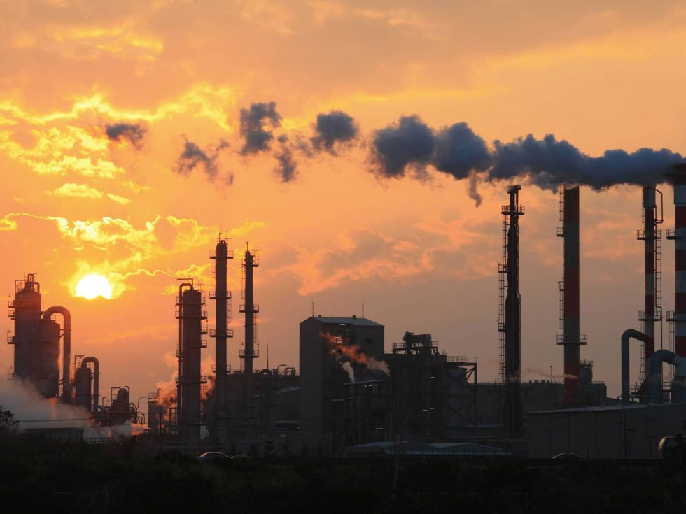

Climate Change.png)
change is the most important issue due to air pollution of our time right now- it will affect every part of our lives, from the weather to the animals on the planet. But what is climate change?
How does air pollution affect Earth’s climate?
Aerosols can impact how the Sun’s light hits Earth. For example, some aerosols reflect sunlight while others absorb sunlight. It depends on the color of the particle.
Dark surfaces—whether it’s a black t-shirt or a dark particle in the atmosphere—absorb the Sun's heat. Lighter-colored surfaces reflect heat from the Sun.
A white t-shirt reflects the Sun on a hot day, making you feel cooler. In the same way, light-colored particles that reflect the Sun’s light and heat away from Earth can make the global temperature cooler.
Dark-colored particles that absorb the Sun’s light can make the global temperature warmer.
Emissions of pollutants into the air can result in changes to the climate. These pollutants, including greenhouse gases, are often referred to as climate forcers. Ozone in the atmosphere warms the climate,
while different components of PM can have either warming or cooling effects on the climate
5 dangerous pollutants you’re breathing in every day
1.PM2.5
PM2.5 refers to fine particles that are 2.5 microns or less in diameter. They are invisible to the naked eye, though noticeable as particle smog in highly polluted areas, and present indoors and out.\
PM2.5 particles come from combusting unclean fuels for cooking or heating, burning waste and agriculture residue, industrial activities, transportation and windblown dust, among other sources. PM2.5 particles
penetrate deep into the lungs and bloodstream, increasing the risk of dying from heart and lung disease, stroke and cancer. These particles can either be emitted directly or formed in the atmosphere from several different emitted pollutants, such as ammonia, and volatile organic compounds.
2.Ground-level ozone
Ground-level ozone, or tropospheric ozone, is a short-lived climate pollutant and although it exists only for a few days to a few weeks, it is a strong greenhouse gas. It forms when pollutants from industry,
traffic, waste and energy production interact in the presence of sunlight. It contributes to smog, worsens bronchitis and emphysema, triggers asthma, damages lung tissue and reduces crop productivity. Exposure to ground-level ozone causes an estimated 472,000 premature deaths every year. Because ozone stunts the growth of plants and forests, it also reduces the amount of carbon that can be sequestered.
3.Nitrogen Dioxide
Nitrogen oxides are a group of air polluting chemical compounds, including nitrogen dioxide (NO2) and nitrogen monoxide. NO2 is the most harmful of these compounds and is generated from the combustion of fuel engines and industry.
It can damage the human heart and lungs and it reduces atmospheric visibility at high concentrations. Finally, it is a critical precursor to the formation of ground-level ozone
4.Black Carbon
Black carbon, or soot, is a component of PM2.5 and is a short-lived climate pollutant. Agricultural burning to clear land, and the wildfires that sometimes result, are the world’s largest sources of black carbon.
It also comes from diesel engines, burning trash, and stoves and furnaces that combust fossil and biomass fuels. It causes poor health and premature death and also increases the risk of dementia. Black carbon emissions have been decreasing over the past decades in many developed countries due to stricter air quality regulations. But emissions are high in many developing countries where air quality is poorly regulated. As a result of open biomass burning and residential solid fuel combustion, Asia, Africa and Latin America contribute approximately 88 per cent of global black carbon emissions.
5.Methane
Methane comes mainly from agriculture, particularly livestock, sewage and solid waste, and oil and gas production. It helps create ground-level ozone and hence contributes to chronic respiratory illnesses and premature death. Intergovernmental Panel on Climate Change research shows that methane – a major short-lived climate pollutant – is responsible for at least a quarter of today’s global warming and reducing human-caused methane, which accounts for more than half of all methane emissions, is one of the most effective ways of combatting climate change.
Most polluted cities in india
Delhi air quality index (AQI) 441

Faridabad air quality index (AQI) 354

Ghaziabad air quality index (AQI) 344
Life In Land/Water
Biodiversity, Natural Capital
Learn how human activity is making global warming worse, and how it is affecting all life on land, from biodiversity to natural capital
Effect on/by Humans
Air Pollution: How We're Changing the Air
Air pollution is created when harmful substances, in the form of gases, liquids, or solids, enter the air. There are natural processes that create air pollution— such as sulfur and chlorine gases from volcanic activity, smoke and ash from wildfires, dust storms, and biological decay — but most pollution enters the air from human-made (anthropogenic) sources. Most human-made air pollution comes from burning fossil fuels for transportation, electricity, and industry. Common pollutants produced by engines that burn fossil fuels are carbon dioxide, nitrogen oxides, sulfur dioxide, volatile organic compounds (VOCs), and particulates. Stoves, incinerators, and open burning produce carbon monoxide and carbon dioxide, as well as particulates. We also create chemicals that would not naturally occur in the atmosphere. Chlorofluorocarbons (CFCs) and hydrochlorofluorocarbons (HCFCs), which are used as refrigerants, are examples of pollutants that only come from human activity. Other sources of CFCs include fumes from aerosol sprays, paint, varnish, and solvents
Six Types of Human-Made Air Pollutants
The Environmental Protection Agency (EPA) Air Quality Index (AQI) is based on the measurements of six pollutants: particulate matter (PM), nitrogen dioxide (NO2), ozone (O3), sulfur dioxide (SO2), lead (Pb), and carbon monoxide (CO).
Particulate Matter (PM)
Particulate matter, also called aerosols or particle pollution, is composed of a large variety of chemicals. Some particles are primary pollutants that come directly from smokestacks, construction sites, fires, or volcanoes. However, most are secondary pollutants that form as the result of chemical reactions in the atmosphere due to emissions from power plants, factories, and vehicles. Particulate matter is classified by size: PM10 is coarse particles with a diameter of 2.5 to 10 micrometers, such as dust, dirt, pollen, and mold. PM2.5 is fine particles with a diameter of 2.5 micrometers or less, such as soot, smoke, organic compounds, and metals.
Nitrogen Dioxide
Vehicle exhaust is the largest source of nitrogen dioxide pollution in the atmosphere, but it is also formed by factories and power plants, and naturally by lightning strikes, volcanoes, and during the decomposition of organic matter. Nitrogen dioxide causes the characteristic reddish-brown color of smog and reacts in the presence of sunlight to produce harmful ozone.
Ozone (O3)
Though ozone naturally exists within the stratosphere, it does not typically occur at the surface. Ozone in the troposphere is a secondary air pollutant created from chemical reactions with other air pollutants. It forms when nitrogen oxides from tailpipes and smokestacks react with VOCs in the presence of sunlight. Tropospheric ozone, also called ground-level ozone, is most common in urban areas and is often measured at high levels in the summer and during the warmest times of the day. One common type of secondary pollution that contains ozone is smog. Smog is a smelly, toxic haze composed of ground-level ozone, particulate matter, and a variety of other chemicals. Smog is an example of how primary air pollution from human activity can lead to even more harmful secondary pollution.
Sulfur Dioxide (SO2)
The smell associated with burnt matches comes from sulfur dioxide. Almost all sulfur dioxide in the atmosphere is the result of human activity, though volcanoes are also a natural source. Coal, oil, and gas often contain sulfur, as do some mineral ores. The burning of any of these sulfur-containing materials, during industrial processing or the generation of electricity, releases toxic sulfur dioxide and sulfur trioxide, together called sulfur oxides, into the atmosphere. When mixed with water droplets suspended in the air, sulfur dioxide forms sulfuric acid, which is a component of acid rain.
Lead (Pb)
Lead is a heavy metal found naturally underground. It enters the air through ore and metals processing, and through the burning of leaded fuel for aircraft and vehicles. The EPA’s requirement to remove lead from “on-road” vehicle gasoline resulted in a 98% decrease in lead levels in the air between 1980 and 2014 (leaded fuels are still allowed for race cars, farm equipment, and propeller aircraft).
Carbon Monoxide (CO)
If something is burning, carbon monoxide is likely being released. Carbon monoxide is a poisonous gas that is created when carbon is burned. Most of the carbon monoxide pollution comes from burning fossil fuels in vehicles, factories, and power plants, but another major source is from burning wood or crop waste. Carbon monoxide is released from volcanoes and forest fires as well. Secondary pollutants like ozone and carbon dioxide (CO2), a greenhouse gas, come from carbon monoxide.
Greenhouse Gas Pollution
The burning of fossil fuels for electricity, heat, and transportation is increasing the amount of greenhouse gases such as carbon dioxide (CO2), nitrous oxide (N2O), and methane (CH4) in our atmosphere. Small amounts of these gases in the atmosphere are safe to breathe but are also dangerous because they are changing Earth’s climate through a process called the greenhouse effect. Land-use changes due to farming and forestry also lead to an increase in greenhouse gas emissions. For example, livestock and their waste release methane, and cutting down trees means less carbon dioxide is removed from the air. The shift from coal to natural gas as an energy source and the increased use of renewable energy is helping to slow carbon dioxide emissions, but overall, greenhouse gas emissions remain high. As long as greenhouse gas emissions remain high, global average temperatures will continue to rise.
Indoor Pollutants
Formaldehyde, asbestos, radon gas, and mold are common harmful indoor air pollutants. Many products used in buildings, such as foam insulation, carpet, and furniture glues, give off high levels of volatile organic compounds (VOCs). Paints, varnishes, and cleaning materials also contain VOCs. Smoking indoors adds many pollutants, including cancer-causing chemicals, to the air. If you burn natural gas or wood to heat your home, be sure to monitor for elevated carbon monoxide levels. Because we typically spend many hours indoors, and because indoor pollutants are confined within a small area, the level of exposure needed to cause harm is much lower than for outdoor pollutants. To reduce health risks from indoor pollutants, limit or eliminate the use of products that give off VOCs within your home. Ensure that homes and buildings have adequate ventilation and open doors or windows when using chemicals or introducing materials that contain VOCs to your indoor environment. Visit the EPA’s website to learn more about indoor air quality.
Impact On human
Air pollution is one of the greatest threats to children’s health. Ninety-nine per cent of people in the world live in places where the air is considered unhealthy. When children breathe toxic air, it harms their health and jeopardizes their future.
For children to grow up healthy, they need clean, safe air.
Outdoor and indoor air pollution are directly linked with respiratory infections and other diseases that account for almost 1 in 10 under-five deaths.
Air pollution accounts for 20% of newborn deaths worldwide, most related to complications of low birth weight and preterm birth.
Adults exposed to air pollution as children tend to have respiratory problems later in life
How does air pollution affect our health?
When the National Ambient Air Quality Standards were established in 1970, air pollution was regarded primarily as a threat to respiratory health. In 1993, NIEHS researchers published the landmark Six Cities Study, which established an association between fine particulate matter and mortality.
Air pollution exposure is associated with oxidative stress and inflammation in human cells, which may lay a foundation for chronic diseases and cancer. In 2013, the International Agency for Research on Cancer of the World Health Organization (WHO) classified air pollution as a human carcinogen.
Research on air pollution and health effects continually advances. Public health concern now includes cancer, cardiovascular disease, respiratory diseases, diabetes mellitus, obesity, and reproductive, neurological, and immune system disorders
Cancer
A large study of more than 57,000 women found living near major roadways may increase a woman’s risk for breast cancer. The NIEHS Sister Study found other airborne toxic substances, especially methylene chloride, which is used in aerosol products and paint removers, are also associated with increased risk of breast cancer. Occupational exposure to benzene, an industrial chemical and component of gasoline, can cause leukemia and is associated with non-Hodgkin’s Lymphoma. A long-term study, 2000-2016, found an association between lung cancer incidence and increased reliance on coal for energy generation.
Cardiovascular Disease
Fine particulate matter can impair blood vessel function and speed up calcification in arteries. NIEHS researchers established links between short-term daily exposure by post-menopausal women to nitrogen oxides and increased risk of hemorrhagic stroke. For some older Americans, exposure to TRAP can result in lowered levels of high-density lipoprotein, sometimes called good cholesterol, increasing their risk for cardiovascular disease. According to a National Toxicology Program (NTP) report, TRAP exposure also increases a pregnant woman’s risk for dangerous changes in blood pressure, known as hypertensive disorders, which are a leading cause of pre-term birth, low birth weight, and maternal and fetal illness and death.
Respiratory Disease
Air pollution can affect lung development and is implicated in the development of emphysema, asthma, and other respiratory diseases, such as chronic obstructive pulmonary disease (COPD). Increases in asthma prevalence and severity are linked to urbanization and outdoor air pollution. Children living in low-income urban areas tend to have more asthma cases than others. Research published in 2023 tied two air pollutants, ozone and PM2.5, to asthma-related changes in children’s airways. PM and nitrogen oxide are linked to chronic bronchitis. In 2020, a major public health challenge was confluence of the COVID-19 pandemic and wildfires across the western U.S. Building on a well-established connection between air pollution and respiratory-tract infections, a study linked wildfire smoke with additional COVID-19 cases and deaths.
Whom does air pollution affect the most?
Air pollution affects everyone’s health, but certain groups may be harmed more. Almost 9 out of 10 people who live in urban areas worldwide are affected by air pollution
Children
The NIEHS-funded Children’s Health Study at the University of Southern California is one of the largest studies of the long-term effects of air pollution on children’s respiratory health. Among its findings: Higher air pollution levels increase short-term respiratory infections, which lead to more school absences. Children who play several outdoor sports and live in high ozone communities are more likely to develop asthma. Children living near busy roads are at increased risk for asthma. Children with asthma who were exposed to high levels of air pollutants were more likely to develop bronchitis symptoms. Living in communities with higher pollution levels can cause lung damage.
Other studies on women and children
NIEHS-funded researchers from the University of California, Davis, Environmental Health Sciences Center are conducting the Bio-Specimen and Fire Effects (B-SAFE) Study. This ongoing project seeks to discover if and how recent wildfires and their smoke affected pregnant women and their babies. Begun in 2017, study participants are pregnant women who were living in Northern California when the 2018, 2019, or 2020 wildfires occurred there. Breathing PM 2.5, even at relatively low levels, may alter the size of a child's developing brain, which may ultimately increase the risk for cognitive and emotional problems later in adolescence. Prenatal exposure to PAHs was associated with brain development effects, slower processing speed, attention-deficit and hyperactivity disorder (ADHD) symptoms, and other neurobehavioral problems in urban youth. In New York City, prenatal exposure to air pollution may play a role in childhood ADHD-related behavior problems. Prenatal exposure to particulate matter was associated with low birth weight. Women exposed to high levels of fine particulate matter during pregnancy, particularly in the third trimester, may have up to twice the risk of having a child with autism. Second and third trimester exposure to PM 2.5 might increase the chance of those children having high blood pressure in early life. In California’s agricultural San Joaquin Valley, women who were exposed to high levels of carbon monoxide, nitrogen oxide, or nitrogen dioxide during their first 8 weeks of pregnancy were more likely to have a baby with neural tube defects. In Marietta, Ohio, home to a ferromanganese refinery, manganese concentrations in blood and hair, a biomarker of air pollution exposure, were associated with lower child IQ scores
Older adults
Alzheimer’s disease and related dementias are a public health challenge for aging populations. NIEHS-funded researchers at the University of Washington identified a link between air pollution and dementias. This well-conducted study adds considerable evidence that ambient air fine particles increase risk of dementias. Conversely, a multi-year study published in 2022 shows improved air quality is associated with lower risk of dementia in older women. The researchers also stated this decline in dementia risk was equivalent to taking nearly 2 1/2 years off the age of the women studied. Air pollution was linked to a greater chance of developing several neurological disorders, including Parkinson's disease, Alzheimer's disease, and other dementias. Hospital admissions data from 63 million older adults in the U.S., obtained over 17 years (2000-2016), was analyzed along with estimated PM 2.5 concentrations by zip code to conduct the study. In older adults, long-term exposure to TRAP may significantly hasten physical disabilities. The risk is more pronounced among racial minorities and lower-income people. Osteoporosis affects women more than men. A large study associated high levels of air pollutants with bone damage, particularly in the lumbar spine, among postmenopausal women. This study expands previous findings linking air pollution and bone damage. Nutrients may counter some harmful effects from air pollution. A 2020 study found omega-3 fatty acids, obtained by eating certain fish, may protect against PM 2.5-associated brain shrinkage in older women
Rural dwellers
An NIEHS-funded study found that concentrations of PM 2.5 in rural Washington State were comparable to urban Seattle. In this study, as regional PM 2.5 increased, there were increased asthma symptoms, such as limitation of activities, more wheezing, and more nighttime waking, in rural children. NIEHS supported a translational research project, Addressing Air Pollution and Asthma (1MB), that may lead to improved health for children suffering from asthma. They found that certain agricultural practices contribute to poor air quality and asthma among children. The team combined high-efficiency particulate air (HEPA) cleaners and a home-based education program to reduce children’s exposure to pollutants in the home. In the rural U.S., large-scale animal feeding operations might compromise regional air quality through emission of pollutants, such as ammonia gas. A study found acute lung function problems in children with asthma in such areas
Different genes
Your genes play a role in respiratory health. NIEHS-funded research discovered that people with specific gene variants, which made them more likely to have lung inflammation, had a greater chance of suffering from asthma if they lived close to major roadways
Precaution
Actions You Can Take to Reduce Air Pollution
Follow these Tips Every Day to Reduce Pollution:
1. Conserve energy - at home, at work, everywhere.
2. Look for the ENERGY STAR label when buying home or office equipment.
3. Carpool, use public transportation, bike, or walk whenever possible.
4. Follow gasoline refueling instructions for efficient vapor recovery, being careful not to spill fuel and always tightening your gas cap securely.
5. Consider purchasing portable gasoline containers labeled “spill-proof,” where available.
6. Keep car, boat, and other engines properly tuned.
7. Be sure your tires are properly inflated.
8. Use environmentally safe paints and cleaning products whenever possible.
9. Mulch or compost leaves and yard waste.
10. Consider using gas logs instead of wood.
On Days when High Ozone Levels are Expected, Take these Extra Steps to Reduce Pollution:
1. Choose a cleaner commute - share a ride to work or use public transportation.
2. Combine errands and reduce trips. Walk to errands when possible.
3. Avoid excessive idling of your automobile.
4. Refuel your car in the evening when its cooler.
5. Conserve electricity and set air conditioners no lower than 78 degrees.
6. Defer lawn and gardening chores that use gasoline-powered equipment, or wait until evening
On Days when High Particle Levels are Expected, Take these Extra Steps to Reduce Pollution:
1. Reduce the number of trips you take in your car.
2. Reduce or eliminate fireplace and wood stove use.
3. Avoid burning leaves, trash, and other materials.
4. Avoid using gas-powered lawn and garden equipment.